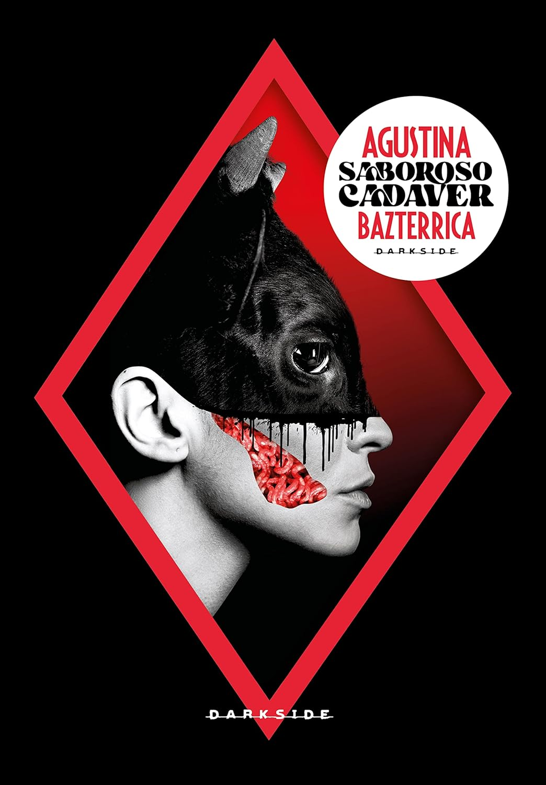

Saboroso Cadáver — E se o canibalismo fosse institucional?
Autor: Agustina Bazterrica
Gênero: Ficção distópica, Terror, Literatura argentina
Publicação: 2017
Páginas: 192
🛒 Comprar Livro
Autor: Agustina Bazterrica
Gênero: Ficção distópica, Terror, Literatura argentina
Publicação: 2017
Páginas: 192
🛒 Comprar LivroVencedor do prêmio Clarín de romance em 2017 e do Ladies of Horror Fiction como melhor romance de 2020 — sendo o primeiro e único livro ganhador escrito em espanhol até o momento —, Saboroso Cadáver (no original, Cadáver Exquisito) é a obra mais conhecida da argentina Agustina Bazterrica. A autora escreveu outros livros e contos de terror distópico, mas nenhum alcançou o mesmo impacto fora da Argentina.
A pergunta central do livro é simples e perturbadora: O que você faria se o canibalismo se tornasse institucional?
Durante o livro, é citado o filme Soylent Green — que trata de um mundo distópico destruído pelo aquecimento global e pela escassez de recursos. A água é privilégio dos ricos, quase não há carne, os pobres se alimentam de "Soylent" — e o grande segredo é que esse produto é feito de carne humana. O governo sabe, mas ninguém acredita em quem tenta contar.
Bazterrica parece ter partido exatamente desse ponto para fazer uma nova pergunta: e se as pessoas soubessem que o Soylent é feito de gente? A trama cresce a partir daí — e ainda levanta a dúvida se o vírus que justifica tudo isso de fato existe, ou foi uma invenção para controlar a superpopulação.
No romance, cientistas descobrem que os animais passaram a carregar um vírus letal aos seres humanos, levando à extinção quase total da fauna. Diante da escassez nutricional, médicos, revistas e o próprio governo passam a incentivar o consumo de carne humana — marcando o período chamado de "Transição", que remodela a economia e a sociedade por completo.
Acompanhamos Marcos Tejo, um protagonista que carrega camadas de dor: o pai, ex-açougueiro, enlouqueceu após a Transição; a esposa está na casa da mãe, incapaz de superar a morte súbita do bebê; e ele mesmo, que sente nojo de carne, trabalha numa unidade de processamento — onde "cabeças" são criadas, abatidas e transformadas em alimento — treinando novos funcionários.
O livro contém críticas ao consumo de carne, ao capitalismo, ao patriarcado e ao governo. Apesar de claras, essas críticas podem passar despercebidas quando o leitor não faz o paralelo com a vida real — o que torna a escrita ainda mais eficiente. A autora brinca alternadamente com a reificação das "cabeças" (especialmente mulheres) e com o antropomorfismo, fazendo o leitor quase esquecer a linha que separa humanos de animais. Ela ainda mistura os sentidos nas descrições das cenas, criando uma imersão quase física no que é narrado.
É uma leitura gráfica, densa e não recomendada para públicos mais sensíveis. Mas é justamente nessa crueza que reside a força do livro.
Para não estragar a experiência de quem ainda vai ler, deixo apenas a reflexão que o livro propõe e que vale ser amadurecida durante a jornada: Como você se sentiria se fosse reduzido a apenas um pedaço de carne?
Recomendo — com a ressalva de que você não sairá dessa leitura da mesma forma que entrou.
Por Laura Werneck
"Quem dita as regras do que é ou não aceitável comer? Sempre foi uma questão de poder — e Bazterrica lembra isso em cada página."